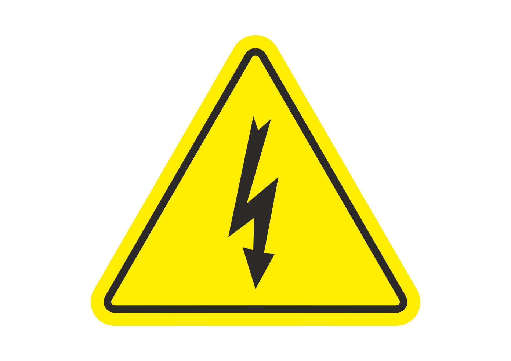

*Опция: Фигурите в това ръководство са схематични и може да не съответстват точно на
Вашия продукт. Ако Вашият продукт не съдържа съответните части, информацията се отнася
|  | ПРЕДУПРЕЖДЕНИЕ: Производителят не поема никаква отговорност за щети, причинени от работа, извършена от неоторизирани лица. | ||
|---|---|---|---|
| ПРЕДУПРЕЖДЕНИЕ: По време на монтажа захранващият кабел на продукта трябва да е изключен. Неспазването на това изискване може да доведе до смърт или сериозни наранявания. | |||
| ПРЕДУПРЕЖДЕНИЕ: Ако вратата не е достатъчно широка, за да може продуктът да премине свободно, демонтирайте я и завъртете продукта настрани; ако това не помогне, свържете се с оторизиран сервиз. | |||